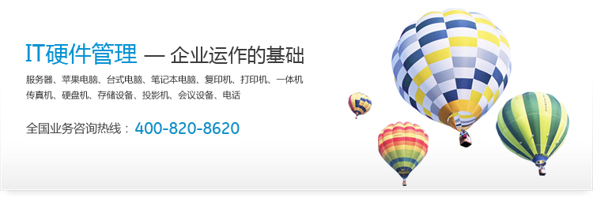

韦尔奇说：“管理靠信息，决策靠信息，企业若没有信息化建设，我不知道他靠什么来发展的。”
随着近年来计算机科技的迅猛发展，IT资产正逐步成为企业运行、开发的重要工具，但管理仍然是不容忽视的问题，一个企业就其规模，PC台数会有几十台至几千台甚至更多，如若管理不善，可能会造成企业IT硬件资产分配不当、软件使用超出许可范围继而形成使用非法软件、安全补丁发放不及时因而留下安全隐患、网络系统紊乱等等。由此可见，企业的IT资产管理刻不容缓。
如果把IT软硬件设备视为企业的资产，那么，它就应该产生商业价值。于是，IT资产管理就不应该再是相比其他更“紧迫”的事情而被搁置一边的问题。IT资产管理按不同的层次可分为许多阶段，这是一个持久的过程。
大多数企业用户深刻地认识到，自己并没有从IT资产中得到回报。许多公司的要求很简单：资产就应该创造商业价值，就是这么直接。那么企业对于IT资产管理的瓶颈到底在哪里呢？究竟是什么制约了企业对IT资产的有效管理呢？
我们来看下面这些问题：
- 如何更好地利用现有的服务器资源？
- 如何更好地利用现有终端设备？
- 如何更好地利用现有网络设备？
- 现在设备够用吗？需要买新的吗？
- 现在IT设备的库存情况？
- 到底现在库存里头还有多少设备？
- 有多少设备在维修？
- 有没有设备借给别的部门？
- 有多少设备已经报废了？
- 企业装了哪些软件？
- 有多少设备超过了折旧年限？
- 某一个厂家的设备好不好用，返修率高吗？
- 这些年来的IT资产投入有多大？
由上可见，优秀的IT资产管理非常重要，上述的问题也是各大企业近年来最关注也是最难解决的问题。优秀的资产管理可以给企业带来了“80/20”的效果，即花20%的力气，得到80%的回报。如果把现有IT资产管理好，会带来以下效果：
- 追踪设备库存情况，在购买新设备时，能更好地做出适当的决定，帮助企业减少浪费。
- 在做IT设备购买的决定时，可以查看库存、维修、借调等设备状态，帮助管理员做出更适当的IT决定。
|

 Copyright © 2008-2012 Lan-serviceTM 版权所有
Copyright © 2008-2012 Lan-serviceTM 版权所有